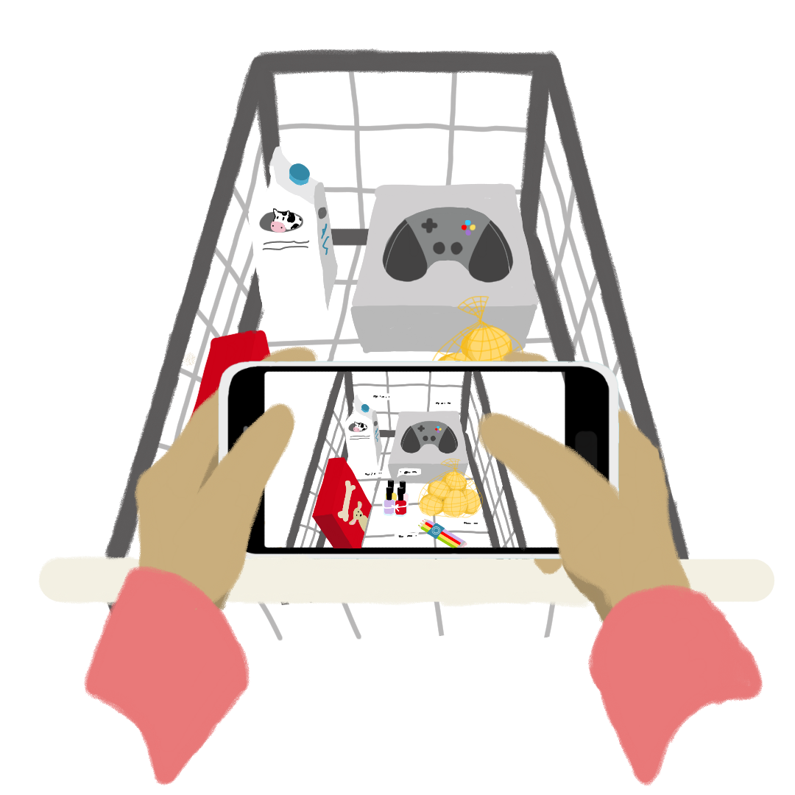
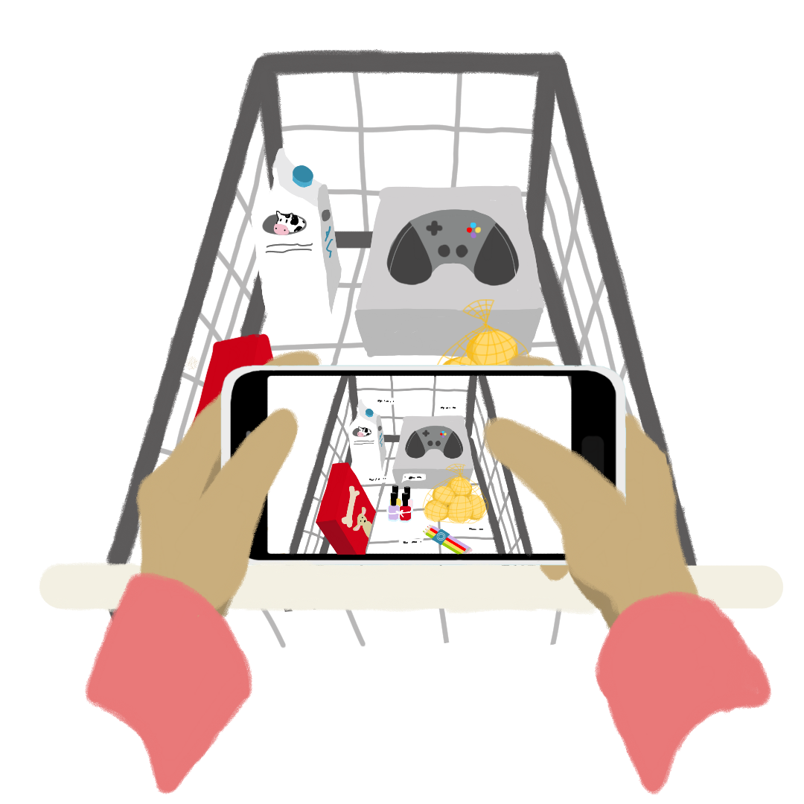
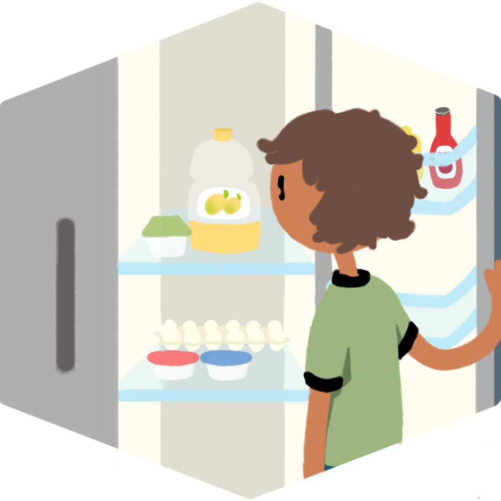
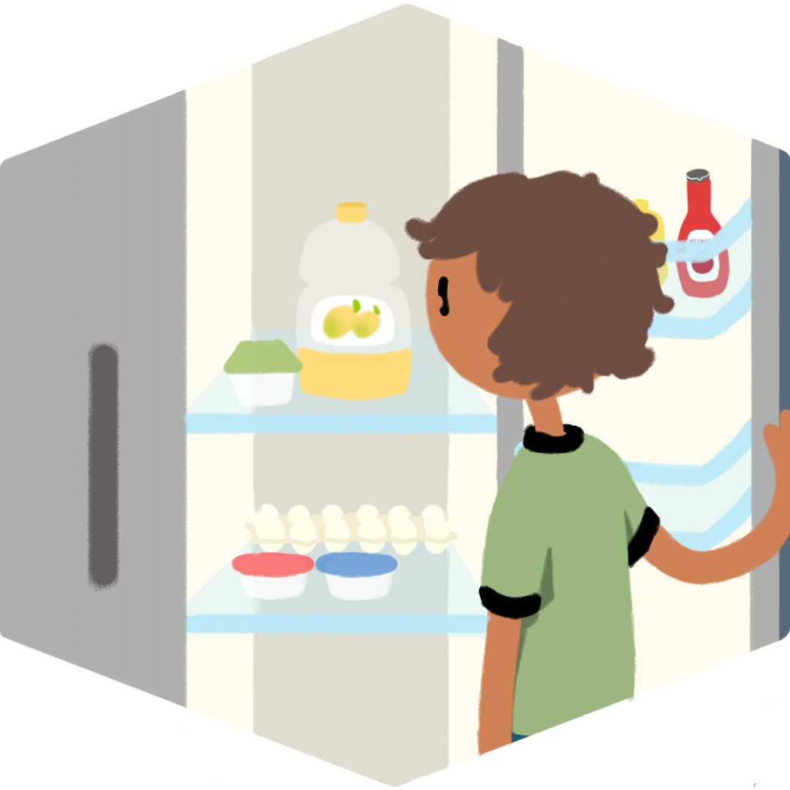

Phot graphic
Checkout
The future of shopping:
identify, scan, and checkout products
just by taking a picture.
With photo checkout,
paying for your items at the
store becomes a breeze
Instead of hunting for barcodes and scanning your
items one by one, all you need to do is take a picture of
your shopping cart. Voila! The products "move" from your
physical cart to your virtual cart, and once you approve
your list, paying is as easy as pressing a button.
 


Photo checkout brings the
experience of browsing in a
3D space to wherever you are
With the ability to pull up a product page with just
your camera, photographic checkout redefines the space
around you, and the way you view shopping itself.
Restocking on items can be as simple as taking a picture
in your fridge, and new finds can present themselves
virtually anywhere.

 

Computervision and
invisible barcoding will
make photographic checkout possible
By training a software program to recognize the shapes, colors, logos, and unique packaging of different items sold through Walmart, products can be recognized even without barcodes. The look of the entire product will help the program determine what it actually is. Just like we, as humans, can look at the thing to the left and decide that it's a snack-size bag of Lays potato chips based on it's packet shape, yellow color, Lay's logo, and size numbers, a computer can also be trained reach the same conclusion.
Through traditional barcoding may no longer be necessary, invisible barcoding (invisble to humans, but visible to a camera) will be important to use, providing a rather easier method of identifying a product than training a program. When made invisible to humans, the barcodes don't have to be confined to a corner of the product. Instead, the barcode is sread overtop of all the package's surfaces, making it possible to pick up the barcode no matter what angle the product is in.
Likely, both computervision and invisible barcoding will work in conjunction to support photographic checkout; invisible barcoding allowing cameras to quickly identify packaged products, and computervision allowing cameras to indentify products without as much packaging, like food, toys, and more.
restatement of benefirts, exciting future